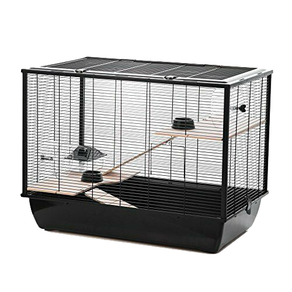
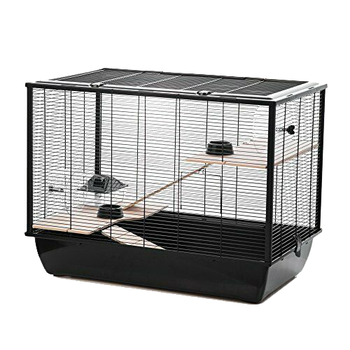

Just like any pet, a hamster comes with certain responsibilities. In addition to giving them plenty of love and attention, you need to handle them regularly, feeding them daily and clean them when required.
Hamsters are relatively clean animals, but in order to maintain good hygiene and avoid any nasty infections it essential that you clean your hamster’s cage on a regular basis. Take a look at our top tips on how to clean out a hamster cage.
It is important that you keep their cage smelling fresh without overcleaning it, as this can cause your hamster stress. We tend to thoroughly clean our hamster’s cage every 10-14 days, taking care to spot clean specific areas daily.
No one likes doing chores but cleaning out your hamster’s cage shouldn’t take too long – in fact, I find it extremely satisfying to see a freshly changed cage sitting on the side. If you want to make life easier for yourself, make a bin cage or purchase one with a detachable base, as these are by far the easiest to cleanout. Modular cages with multiple compartments, levels and tubes may look nice but are a pain to clean as they need to be disassembled and put back together again each time!
Examining the contents of your hamster’s cage can also tell you a lot about your hamster’s personality (what foods the like and dislike for example) and can even alert you to any health issues such as signs of diarrhea.
Remove your hamster from the cage
You will need to remove your hamster from their cage and place them somewhere safe in order to get full access to their cage. We let our hamster Oscar, run around our hallway where there are no holes, gaps, wires or means of escape. Alternatively, you could place them in a playpen, exercise ball or secondary cage.
Remove additional items
Take care to remove all additional items such as your hamster hideout, water bottle, toys, wheel and food bowl from the cage.
Top tip – Try to clean your hamster cage accessories on a separate day to the actual cage. This will ensure that your hamster’s scent remains which put them at ease when placed back in what might at first appear to be an unfamiliar cage to them. This also applies to the hamster hideout. Try to mix some of the unsoiled original bedding in with the new.
Discard dirty bedding and sawdust
Remove all of the dirty bedding and sawdust, remembering to recycle any in a biodegradable bag.
Top tip – Try and keep your hamster’s food hoard, replacing it in the same area as you took it from. This hoard is food they have collected, just like they would in the wild, which they store to eat at a later date. Just imagine how you would feel if someone stole your favorite snacks!
Clean the cage and tubes
Wipe down the cage, bars and any tubes with warm, soapy water or one part vinegar and two parts water. Pay particular attention to the corners as these areas are likely to be grubbier. Wipe dry with a clean cloth once washed.
Top tip – You can buy pet-safe disinfectant, but as hamsters are not particularly dirty, we would only suggest purchasing this if your hamster has been unwell. Hamsters, like humans, need to be exposed to a certain level of bacteria – especially if they are handled regularly outside of their cage.
Fill the cage with substrate/sawdust bedding
Fill the cage with clean substrate and bedding, taking care to ensure that their favorite items are included. This is also a good time to change the layout of the cage slightly to prevent your hamster from getting bored.
Top tip – Choose a substrate with a good aroma. Wood-based substrates are not only affordable, but they tend to be better with odor control than paper-based ones.
Transfer your hamster back
Once everything is in its place and the cage is sparkling clean, transfer your hamster back inside their home – ensuring that they are rewarded with a well-earned treat.

 
